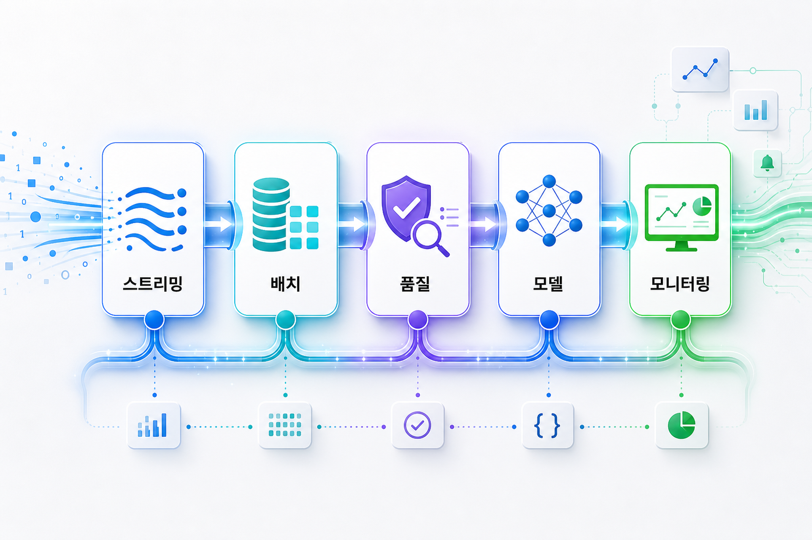

수집 문서 1
나노 바나나 이와 나노 바나나 프로 공개 확대
구글 클라우드가 최신 시각 생성 모델의 접근성을 넓히며, 기업 콘텐츠 제작과 제품 경험 설계의 자동화 가능성을 키우고 있다.
원문 보기오늘의 구글 클라우드 블로그는 두 가지 축을 보여준다. 하나는 누구나 쓸 수 있는 고성능 시각 생성 모델의 확산이고, 다른 하나는 데이터 처리 흐름이 인공지능 운영 체계와 직접 연결되는 변화다.
핵심 메시지
나노 바나나 계열 시각 모델의 공개 확대는 콘텐츠 제작의 진입 장벽을 낮춘다. 데이터플로우의 인공지능 중심 개선은 운영 데이터가 모델 입력과 평가, 자동화로 이어지는 길을 넓힌다. 한국 기업은 두 흐름을 별개 도입 과제가 아니라 데이터·모델·보안 거버넌스를 묶는 실행 체계로 보아야 한다.
핵심 트렌드 분석
기술 변화의 의미
시각 생성 모델은 마케팅, 교육, 영업 자료 제작 속도를 끌어올린다. 하지만 기업 현장에서는 이미지 품질보다 승인 흐름, 저작권 확인, 브랜드 통제, 민감정보 유출 방지가 더 중요하다. 동시에 데이터 파이프라인은 단순 처리 작업에서 벗어나 모델 학습·추론·평가에 필요한 신뢰 가능한 입력 계층으로 이동한다.
따라서 핵심은 새로운 도구를 많이 쓰는 것이 아니라, 데이터 계보와 접근 권한, 결과물 검수 기준을 업무 흐름에 내장하는 것이다.

기업 적용 관점과 한국 기업 관점 시사점
모델보다 먼저 원천 데이터 품질, 개인정보 분리, 데이터 계보를 점검한다.
생성 결과물을 누가 검토하고 배포할지 승인 기준을 명확히 한다.
이미지 생성, 데이터 처리, 모델 호출 비용을 부서·서비스 단위로 추적한다.
접근 권한, 프롬프트 기록, 산출물 이력, 외부 공유 정책을 함께 설계한다.
마케팅 소재, 내부 교육, 데이터 품질 자동화처럼 효과 측정이 쉬운 업무부터 시작한다.
성공한 실험은 공통 플랫폼과 표준 절차로 묶어 반복 가능한 방식으로 확산한다.
실행 전략
첫째, 생성형 시각 모델은 내부 캠페인 초안과 교육 자료처럼 위험이 낮은 영역에서 효과를 확인한다. 둘째, 데이터플로우형 처리 흐름은 모델 입력과 품질 검증을 함께 설계한다. 셋째, 개인정보·저작권·브랜드·감사 로그 기준을 적용한다. 넷째, 공통 템플릿과 운영 지표를 만들어 조직 전체로 확산한다.
신규 기능의 공개 상태, 지역 지원, 가격 조건은 원문 및 공식 문서 기준으로 후속 확인이 필요하다.
리스크와 거버넌스 고려사항
| 영역 | 주요 리스크 | 권장 대응 |
|---|---|---|
| 시각 생성 | 브랜드 오용, 저작권 논란, 부정확한 텍스트 | 승인 절차, 사용 금지 영역, 결과물 보관 정책을 사전에 정의 |
| 데이터 파이프라인 | 민감 데이터 노출, 품질 저하, 비용 급증 | 데이터 분류, 처리 이력, 비용 한도와 알림을 운영 기준에 포함 |
| 조직 운영 | 부서별 중복 도입, 성과 측정 부재 | 공통 플랫폼, 표준 지표, 재사용 가능한 업무 템플릿으로 통합 |
출처 확인
이미지 프롬프트 기록
목적: 대표 이미지
삽입 위치: 상단 도입부
권장 비율: 가로형
대체 텍스트: 생성형 시각 모델과 클라우드 데이터 흐름을 표현한 추상 편집 이미지
목적: 데이터 파이프라인 설명
삽입 위치: 기술 변화의 의미 섹션
권장 비율: 가로형
대체 텍스트: 데이터 파이프라인이 인공지능 운영으로 이어지는 과정을 표현한 인포그래픽
목적: 기업 실행 로드맵
삽입 위치: 실행 전략 섹션
권장 비율: 가로형
대체 텍스트: 기업 적용 로드맵과 거버넌스 단계를 표현한 시각 이미지